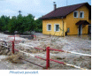
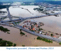
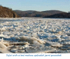
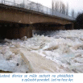
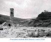

Typy povodní Types of floods
Přívalová povodeň Flash flood
|  Vzniká v případě velmi intenzivních srážek většinou na malém povodí. Voda se nestíhá zasáknout a odtéká okamžitě ze svahů, normálně suchými úžlabinami nebo vodními toky, které se vylévají z břehů. |
Velká regionální povodeň Big regional flooding
|  Vzniká v případě dlouhotrvajících vydatných srážek na velkém území, voda nasytí půdu a dále se nemůže vsakovat. Retenční účinek krajiny již od jisté chvíle nepůsobí a všechna voda odtéká z území a je rychle převedena do větších řek, kde dochází k výrazným povodním na jejich středních a dolních tocích. |
Zimní nebo jarní povodeň Winter or spring flooding
|  Vzniká při zimní nebo jarní oblevě a rychlém tání sněhu na horách i v nižších polohách. |
Ledová povodeň Ice jam flooding
|  Vzniká při oteplení po delším mrazivém období, kdy zamrzly řeky. Led nestíhá všechen odtát a láme se na kusy, které plavou po řece dolů. V určitých místech může dojít k jejich nahromadění a tím k ucpání koryta řeky a vylití vody z břehů. |
Zvláštní povodeň Catastrophic flooding
|  Vzniká při poruše vodního díla, které vzdouvá a zadržuje vodu. |